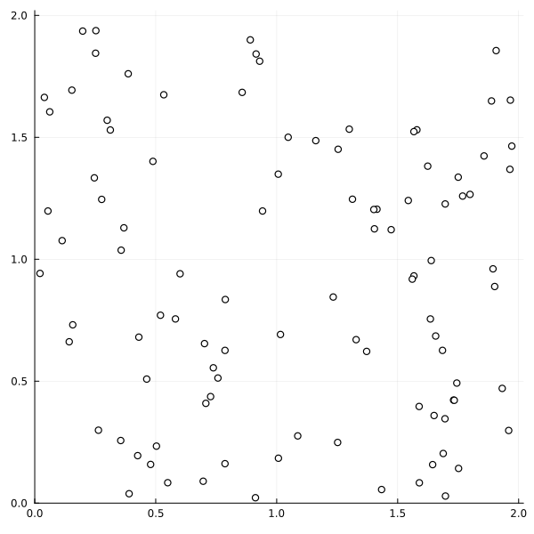
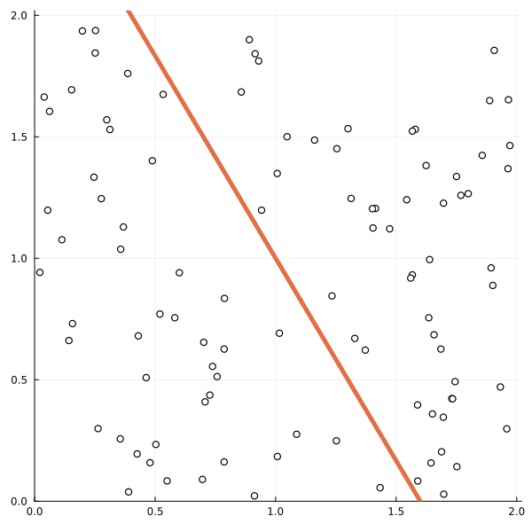
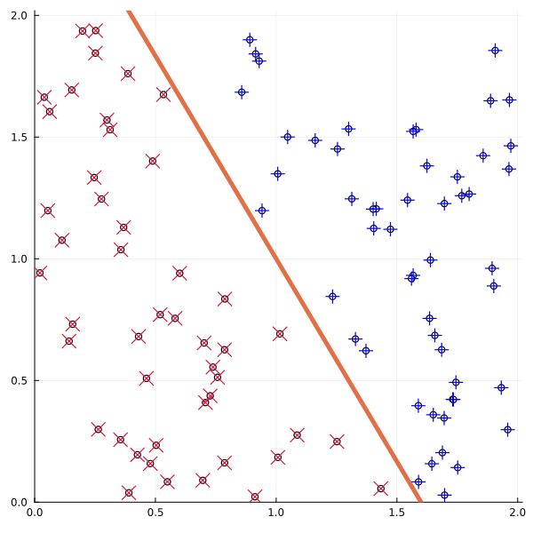
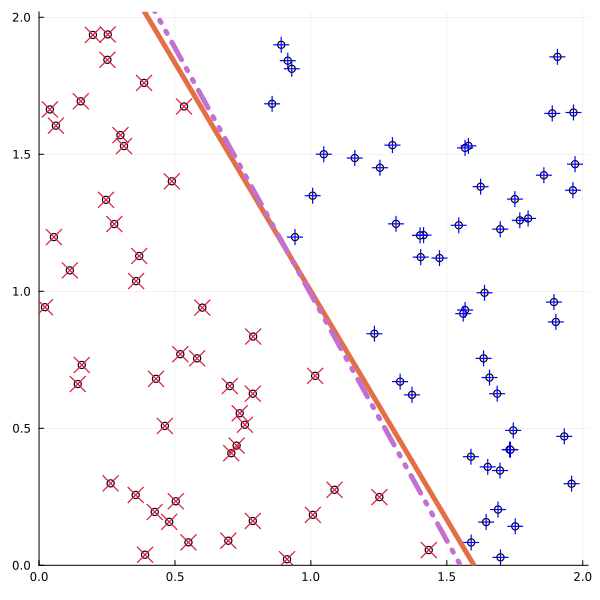
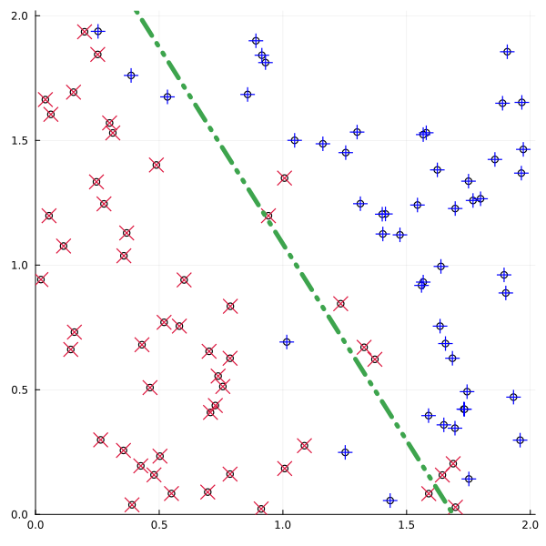
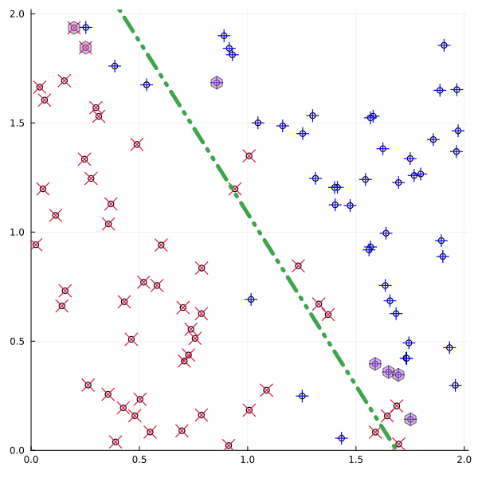
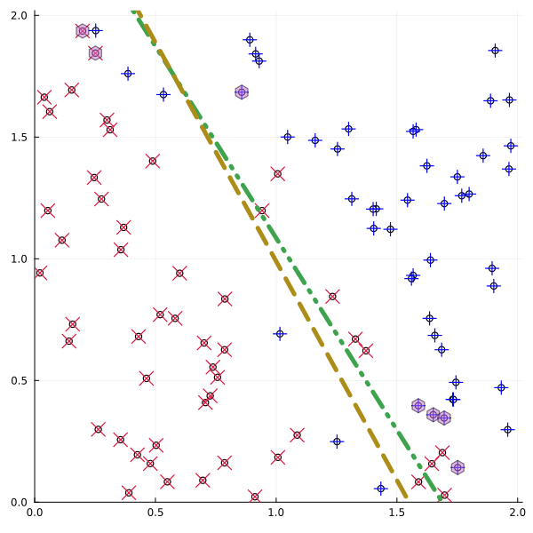
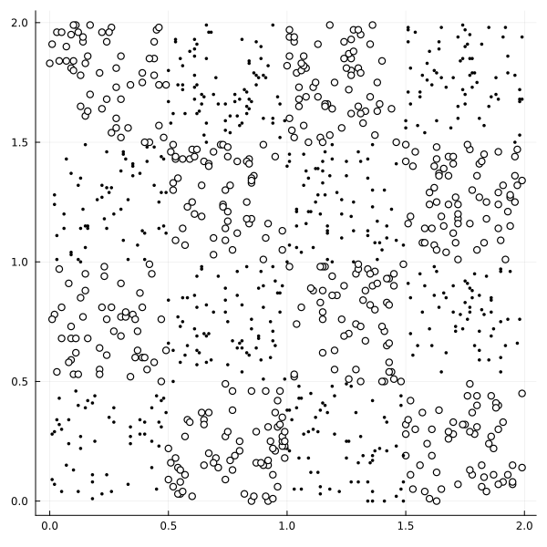

Example: classification problems
This tutorial was generated using Literate.jl. Download the source as a .jl file.
This tutorial shows how JuMP can be used to formulate and solve classification problems using support vector machines (SVMs). It covers linear SVMs, their dual formulations, and the kernel method for nonlinear classifiers, following Section 9.4 of (Ferris et al., 2007).
Classification problems deal with constructing functions, called classifiers, that can efficiently classify data into two or more distinct sets. A common application is classifying previously unseen data points after training a classifier on known data.
Learning intentions:
- Formulate a linear support vector machine as a quadratic program and solve it to find a separating hyperplane from labelled training data
- Derive the dual SVM and use the resulting dual variables to recover the classifier without solving the primal problem directly
- Extend the SVM to nonlinear classification by replacing the inner-product Gram matrix with a kernel function
Required packages
This tutorial uses the following packages:
using JuMPimport DelimitedFilesimport Ipoptimport LinearAlgebraimport Plotsimport Randomimport TestData and visualisation
To start, let's generate some points to test with. The argument $m$ is the number of 2-dimensional points:
function generate_test_points(m; random_seed = 1) rng = Random.MersenneTwister(random_seed) return 2.0 .* rand(rng, Float64, m, 2)endgenerate_test_points (generic function with 1 method)For the sake of the example, let's take $m = 100$:
P = generate_test_points(100);The points are represented row-wise in the matrix P. Let's visualise the points using the Plots package:
plot = Plots.scatter( P[:, 1], P[:, 2]; xlim = (0, 2.02), ylim = (0, 2.02), color = :white, size = (600, 600), legend = false,)
We want to split the points into two distinct sets on either side of a dividing line. We'll then label each point depending on which side of the line it happens to fall. Based on the labels of the point, we'll show how to create a classifier using a JuMP model. We can then test how well our classifier reproduces the original labels and the boundary between them.
Let's make a line to divide the points into two sets by defining a gradient and a constant:
w_0, g_0 = [5, 3], 8line(v::AbstractArray; w = w_0, g = g_0) = w' * v - gline(x::Real; w = w_0, g = g_0) = -(w[1] * x - g) / w[2];Julia's multiple dispatch feature allows us to define the vector and single-variable form of the line function under the same name.
Let's add this to the plot:
Plots.plot!(plot, line; linewidth = 5)
Now we label the points relative to which side of the line they are. It is numerically useful to have the labels +1 and -1 for the upcoming JuMP formulation.
labels = ifelse.(line.(eachrow(P)) .>= 0, 1, -1)Plots.scatter!( plot, P[:, 1], P[:, 2]; shape = ifelse.(labels .== 1, :cross, :xcross), markercolor = ifelse.(labels .== 1, :blue, :crimson), markersize = 8,)
Our goal is to show we can reconstruct the line from just the points and the labels.
Formulation: linear support vector machine
A classifier known as the linear support vector machine (SVM) looks for the affine function $L(p) = w^\top p - g$ that satisfies $L(p) < 0$ for all points $p$ with a label -1 and $L(p) \ge 0$ for all points $p$ with a label +1.
The linearly constrained quadratic program that implements this is:
\[\begin{aligned} \min_{w \in \mathbb{R}^n, \; g \in \mathbb{R}, \; y \in \mathbb{R}^m} \quad & \frac{1}{2} w^\top w + C \; \sum_{i=1}^m y_i \\ \text{subject to } \quad & D \cdot (P w - g) + y \geq \mathbf{1} \\ & y \ge 0. \end{aligned}\]
where $D$ is a diagonal matrix of the labels.
We need a default value for the positive penalty parameter $C$:
C_0 = 100.0;JuMP formulation
Here is the JuMP model:
function solve_SVM_classifier(P::Matrix, labels::Vector; C::Float64 = C_0) m, n = size(P) model = Model(Ipopt.Optimizer) set_silent(model) @variable(model, w[1:n]) @variable(model, g) @variable(model, y[1:m] >= 0) @objective(model, Min, 1 / 2 * w' * w + C * sum(y)) D = LinearAlgebra.Diagonal(labels) @constraint(model, D * (P * w .- g) .+ y .>= 1) optimize!(model) assert_is_solved_and_feasible(model) slack = extrema(value.(y)) println("Minimum slack: ", slack[1], "\nMaximum slack: ", slack[2]) classifier(x) = line(x; w = value.(w), g = value(g)) return model, classifierendsolve_SVM_classifier (generic function with 1 method)Results
Let's recover the values that define the classifier by solving the model:
_, classifier = solve_SVM_classifier(P, labels)(A JuMP Model
├ solver: Ipopt
├ objective_sense: MIN_SENSE
│ └ objective_function_type: QuadExpr
├ num_variables: 103
├ num_constraints: 200
│ ├ AffExpr in MOI.GreaterThan{Float64}: 100
│ └ VariableRef in MOI.GreaterThan{Float64}: 100
└ Names registered in the model
└ :g, :w, :y, Main.var"#classifier#11"{VariableRef, Vector{VariableRef}}(g, VariableRef[w[1], w[2]]))With the solution, we can ask: was the value of the penalty constant "sufficiently large" for this data set? This can be judged in part by the range of the slack variables. If the slack is too large, then we need to increase the penalty constant.
Let's plot the solution and check how we did:
Plots.plot!(plot, classifier; linewidth = 5, linestyle = :dashdotdot)
We find that we have recovered the dividing line from just the information of the points and their labels.
Nonseparable classes of points
Now, what if the point sets are not cleanly separable by a line (or a hyperplane in higher dimensions)? Does this still work? Let's repeat the process, but this time we will simulate nonseparable classes of points by intermingling a few nearby points across the previously used line.
nearby_indices = abs.(line.(eachrow(P))) .< 1.1labels_new = ifelse.(nearby_indices, -labels, labels)model, classifier = solve_SVM_classifier(P, labels_new)plot = Plots.scatter( P[:, 1], P[:, 2]; xlim = (0, 2.02), ylim = (0, 2.02), color = :white, size = (600, 600), legend = false,)Plots.scatter!( plot, P[:, 1], P[:, 2]; shape = ifelse.(labels_new .== 1, :cross, :xcross), markercolor = ifelse.(labels_new .== 1, :blue, :crimson), markersize = 8,)Plots.plot!(plot, classifier; linewidth = 5, linestyle = :dashdotdot)
So our JuMP formulation still produces a classifier, but it mis-classifies some of the nonseparable points.
We can find out which points are contributing to the shape of the line by looking at the dual values of the affine constraints and comparing them to the penalty constant $C$:
affine_cons = all_constraints(model, AffExpr, MOI.GreaterThan{Float64})active_cons = findall(isapprox.(dual.(affine_cons), C_0; atol = 0.001))findall(nearby_indices) ⊆ active_construeThe last statement tells us that our nonseparable points are actively contributing to how the classifier is defined. The remaining points are of interest and are highlighted:
P_active = P[setdiff(active_cons, findall(nearby_indices)), :]Plots.scatter!( plot, P_active[:, 1], P_active[:, 2]; shape = :hexagon, markersize = 8, markeropacity = 0.5,)
Advanced: duality and the kernel method
We now consider an alternative formulation for a linear SVM by solving the dual problem.
The dual program
The dual of the linear SVM program is also a linearly constrained quadratic program:
\[\begin{aligned} \min_{u \in \mathbb{R}^m} \quad & \frac{1}{2} u^\top D P P^\top D u - \; \mathbf{1}^\top u \\ \text{subject to } \quad & \mathbf{1}^\top D u = 0 \\ & 0 \leq u \leq C\mathbf{1}. \end{aligned}\]
This is the JuMP model:
function solve_dual_SVM_classifier(P::Matrix, labels::Vector; C::Float64 = C_0) m, n = size(P) model = Model(Ipopt.Optimizer) set_silent(model) @variable(model, 0 <= u[1:m] <= C) D = LinearAlgebra.Diagonal(labels) @objective(model, Min, 1 / 2 * u' * D * P * P' * D * u - sum(u)) @constraint(model, con, sum(D * u) == 0) optimize!(model) assert_is_solved_and_feasible(model) w = P' * D * value.(u) g = dual(con) classifier(x) = line(x; w = w, g = g) return classifierendsolve_dual_SVM_classifier (generic function with 1 method)We recover the line gradient vector $w$ through setting $w = P^\top D u$, and the line constant $g$ as the dual value of the single affine constraint.
The dual problem has fewer variables and fewer constraints, so in many cases it may be simpler to solve the dual form.
We can check that the dual form has recovered a classifier:
classifier = solve_dual_SVM_classifier(P, labels)Plots.plot!(plot, classifier; linewidth = 5, linestyle = :dash)
The kernel method
Linear SVM techniques are not limited to finding separating hyperplanes in the original space of the dataset. One could first transform the training data under a nonlinear mapping, apply our method, then map the hyperplane back into original space.
The actual data describing the point set is held in a matrix $P$, but looking at the dual program we see that what actually matters is the Gram matrix $P P^\top$, expressing a pairwise comparison (an inner-product) between each point vector. It follows that any mapping of the point set only needs to be defined at the level of pairwise maps between points. Such maps are known as kernel functions:
\[k \; : \; \mathbb{R}^n \times \mathbb{R}^n \; \rightarrow \mathbb{R}, \qquad (s, t) \mapsto \left< \Phi(s), \Phi(t) \right>\]
where the right-hand side applies some transformation $\Phi : \mathbb{R}^n \rightarrow \mathbb{R}^{n'}$ followed by an inner-product in that image space.
In practice, we can avoid having $\Phi$ explicitly given but instead define a kernel function directly between pairs of vectors. This change to using a kernel function without knowing the map is called the kernel method (or sometimes, the kernel trick).
Classifier using a Gaussian kernel
We will demonstrate the application of a Gaussian or radial basis function kernel:
\[k(s, t) = \exp\left( -\mu \lVert s - t \rVert^2_2 \right)\]
for some positive parameter $\mu$.
k_gauss(s::Vector, t::Vector; μ = 0.5) = exp(-μ * LinearAlgebra.norm(s - t)^2)k_gauss (generic function with 1 method)Given a matrix of points expressed row-wise and a kernel, the next function returns the transformed matrix $K$ that replaces $P P^\top$:
function pairwise_transform(kernel::Function, P::Matrix{T}) where {T} m, n = size(P) K = zeros(T, m, m) for j in 1:m, i in 1:j K[i, j] = K[j, i] = kernel(P[i, :], P[j, :]) end return LinearAlgebra.Symmetric(K)endpairwise_transform (generic function with 1 method)Now we're ready to define our optimization problem. We need to provide the kernel function to be used in the problem. Note that any extra keyword arguments here (like parameter values) are passed through to the kernel.
function solve_kernel_SVM_classifier( kernel::Function, P::Matrix, labels::Vector; C::Float64 = C_0, kwargs...,) m, n = size(P) K = pairwise_transform(kernel, P) model = Model(Ipopt.Optimizer) set_silent(model) @variable(model, 0 <= u[1:m] <= C) D = LinearAlgebra.Diagonal(labels) con = @constraint(model, sum(D * u) == 0) @objective(model, Min, 1 / 2 * u' * D * K * D * u - sum(u)) optimize!(model) assert_is_solved_and_feasible(model) u_sol, g_sol = value.(u), dual(con) function classifier(v::Vector) return sum( D[i, i] * u_sol[i] * kernel(P[i, :], v; kwargs...) for i in 1:m ) - g_sol end return classifierendsolve_kernel_SVM_classifier (generic function with 1 method)This time, we don't recover the line gradient vector $w$ directly. Instead, we compute the classifier $f$ using the function:
\[ f(v) = \sum_{i=1}^m D_{ii} u_i \; k(p_i, v ) - g\]
where $p_i$ is row vector $i$ of $P$.
Checkerboard dataset
To demonstrate this nonlinear technique, we'll use the checkerboard dataset.
filename = joinpath(@__DIR__, "data", "checker", "checker.txt")checkerboard = DelimitedFiles.readdlm(filename, ' ', Int)labels = ifelse.(iszero.(checkerboard[:, 1]), -1, 1)B = checkerboard[:, 2:3] ./ 100.0 # rescale to [0,2] x [0,2] square.plot = Plots.scatter( B[:, 1], B[:, 2]; color = ifelse.(labels .== 1, :white, :black), markersize = ifelse.(labels .== 1, 4, 2), size = (600, 600), legend = false,)
Is the technique capable of generating a distinctly nonlinear surface? Let's solve the Gaussian kernel based quadratic problem with these parameters:
classifier = solve_kernel_SVM_classifier(k_gauss, B, labels; C = 1e5, μ = 10.0)grid = [[x, y] for x in 0:0.01:2, y in 0:0.01:2]grid_pos = [Tuple(g) for g in grid if classifier(g) >= 0]Plots.scatter!(plot, grid_pos; markersize = 0.2)
We find that the kernel method can perform well as a nonlinear classifier.
The result has a fairly strong dependence on the choice of parameters, with larger values of $\mu$ allowing for a more complex boundary while smaller values lead to a smoother boundary for the classifier. Determining a better performing kernel function and choice of parameters is covered by the process of cross-validation with respect to the dataset, where different testing, training and tuning sets are used to validate the best choice of parameters against a statistical measure of error.